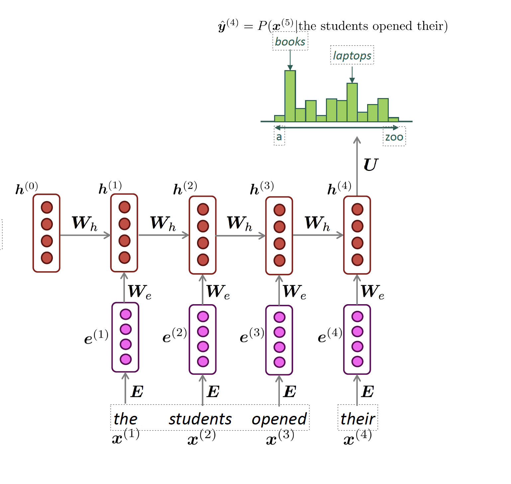

PPOL 5203 - Data Science I: Foundations
Week 12: Generative AI: LLMs
Professor: Tiago Ventura
Motivation
We are going through a unique technological revolution with the use of Artificial intelligence.
Most of the recent changes come from the so called Large Langue Models
- They are everywhere — ChatGPT, Claude, Gemini, Copilot, LLaMA.
- Used for writing, coding, summarizing, policy briefs, and internet search.
- They’re reshaping education, research, and communication.
Most importantly: research tasks that until very recently required either sophisticated ML models, heavy dictionaries or a lot of human inputs can be performed with comparable performance by pre-trained LLMs models
Classification Tasks (sentiment, political stance)
Unsupervised task (topic modeling and clustering)
Data generation (summarization, generation of synthetic text and images)
Ideological scaling
Image analysis, object identification, OCR…
Plans for Today
Early Language Models: N-Grams
Neural Language Models (LMs)
LARGE Language Models (Transformers)
Outsourcing Content Analysis Tasks with GenAI LLMs
Some coding applications
Text Classification
Synthetic Survey Responses
If we have time, I can show you another application out these two options:
Analyzing open-ended survey questions
Image processing and detecting elements on images with LLMs
What is a language model?
Language model
Language Modeling is the task of predicting what word comes next after a sequence of words
the students opened their ______
books
laptop
exams
minds
More formally, given a sequence of words \(x_1\), \(x_2\), \(x_3\) … compute of the probability of distribution of the next word \(x_{t+1}\)
Where \(x_{t+1}\) is any word in the vocabulary
A system that does this is called a Language Model
Early Language Models: N-grams
Definition: An n-gram is a chunk of n consecutive words.
- unigrams: “the”, “students”, “opened”, ”their”
- bigrams: “the students”, “students opened”, “opened their”
- trigrams: “the students opened”, “students opened their”
- four-grams: “the students opened their
Idea: Collect statistics about how frequent different n-grams are and use these to predict next word.
A little bit of math…
Starting from a simple conditional probability
\[ P(A|B)= \frac{P(A, B)}{P(B)} \]
Suppose we are learning a 4-gram Language Model
- students opened their _______
Assume A={“book”}, B={“the students opened their”},
\[ P(book|\text{the students opened their}) \sim \frac{ \text{counts}( \text{the students opened their book})}{\text{counts} (\text{the students opened their})} \]
For example, suppose that in the corpus:
“students opened their” occurred 1000 times
“students opened their books” occurred 400 times
- P(books | students opened their) = 0.4
“students opened their exams” occurred 100 times
- P(exams | students opened their) = 0.1
N-gram language models in practice
today the ____
Get a probability distribution over words
- company 0.153
- bank 0.153
- price 0.077 ….
Sample a word
today the company
Get a probability distribution over words
- of 0.30
- the 0.08
- for 0.077 ….
Sample a word… and repeat
Large Language Models
As you can imagine: N-grams are not great. Cannot memorize long distance, explodes with large text, knows nothing about meaning.
In early 2000s, CS folks started improving language models with large models (neural networks) and large data (the internet)
Fixed Window Neural Language Model
output distribution
\[\hat{y} = \mathrm{softmax}(U h + b_2) \in \mathbb{R}^{|V|}\]
hidden layer
\[h = f(W e + b_1)\]
concatenated word embeddings
\[e = [e^{(1)}; e^{(2)}; e^{(3)}; e^{(4)}]\]
words / one-hot vectors
\[x^{(1)}, x^{(2)}, x^{(3)}, x^{(4)}\]
Reccurrant Neural Network (RNN)
Def: Neural network architecture that processes sentences sequentially with hidden states that carry over-time information.
output distribution
\[\hat{y}^{(t)} = \mathrm{softmax}\left(U h^{(t)} + b_2\right) \in \mathbb{R}^{|V|}\]
hidden states
\[h^{(t)} = \sigma\left(W_h h^{(t-1)} + W_e e^{(t)} + b_1\right)\]
\[h^{(0)} \text{ is the initial hidden state}\]
word embeddings
\[ e^{(t)} = E x^{(t)} \]
words / one-hot vectors
\[x^{(t)} \in \mathbb{R}^{|V|}\]

Challenges with pre-transformers models
Bottleneck problem: RNNs are unrolled from left-to-right. Hard to capture long-term dependency
Nearby words are often more important because they are incorporated more recently
Gradients are unstable (vanishing or exploding) because they depend on continuous chain rules for the calculation
Non-parallelizable: RNNs handles text sequentially, so you cannot really speed things up with GPUs
Transformers
Definition: a Neural Network with a specific structure that includes a mechanism called self-attention.
Publication: first introduced in the paper Attention is All You Need by a group of researchers from Google Brain.
Usage: Core architecture behind most recent developments of Natural Language Processing, such as recent LLMs:

Notable aspects of Transformers (LLMs)
Encoder x Decoder: separates learning embeddings from input (encoding) to text generation (decoding)
Attention + Contextual Knowledge: the REAL DEAL. Allows words to focus on the most relevant words of a particular sequence. Different vectors for “tower”, “eiffel tower” or “beer tower”.
Parallelization: All tokens are processed simultaneously rather than sequentially. This means we can process words in parallel via GPUs!!
Training via Masked Attention Masked inputs to train bi-directional models, looking at all words!
Neural Networks - Transformers (2017)
Large Language Models
Same intuition of n-gram language models: word prediction. Only decoder part of the transformers!
- But using:
- Billions or trillions of parameters.
- Trained on petabytes of text (the internet, books, code, websites, pretty much everything you can imagine)
- trained with self-attention bi-directional masking
- But using:
After training, these models learn word representation and language generation.
- Then they are fine-tune to answer to instructions from humans (Either via Reinforcement Learning or Direct Preference Optimization)
There are two ways to use LLMs
- Out of the box: refers to utilizing the model without any updating of the parameters of the model
- Finetune: involves further training the model using gradient-based updates
Out of the Box LLMs with Prompts
Prompts: instructions we give to a language model in natural language
- Basis of prompting is on contextual generation
- Given the prompt as context, the LLM will generate the next token based on its token probability, conditioned on the prompt:
Structure of a Prompt
Instruction: a specific task or instruction you want the model to perform
Context: additional information or context that can steer the model to better responses
Input data: the input or question that we are interested in finding a response to
Output indicator: the type or format of the output
Of course, you don’t need all four elements, but prompts that have all four elements are often effective
Prompt Engineering Examples
Zero Shot: Classify the sentiment of the following review:
Few Shot: Given these examples, Classify the sentiment of the following review:
Role: Acting as a crowdworker, classify the sentiment of following review:
Chain-of-thought: prompting means guiding a language model through a series of connected logical steps or thoughts
Example:

Usage
All these applications are hard to do at scale via LLMs web-browser versions (as ChatGPT).
Instead we will use access via API (programming call either through R and Python) to access and ask the models to perform certain tasks:
OpenAI API: https://openai.com/api/
Claude Antrophic: https://www.claude.com/platform/api
https://ai.google.dev/
Examples of LLMs application
LLMs: Classification
Rathje et. al. “GPT is an effective tool for multilingual psychological text analysis”
- Use LLMs with zero-shot prompting for measure psycological concepts (sentiment classification).
“Is the sentiment of this text positive, neutral, or negative? Answer only with a number: 1 if positive, 2 if neutral, and 3 if negative. Here is the text: [tweet, news headline or Reddit comment text]”
To see this as next work prediction, think about this example:
- P(w=positive|I love this class) > P(w=neutral|I love this class)
- Is positive the most likely next word?
- No… but it is more likely than the word negative
- Or other negative words that are close to negative in the embedding space.
- Is positive the most likely next word?
- P(w=positive|I love this class) > P(w=neutral|I love this class)
LLMs: Synthetic Survey Data
Bisbee et. al. “Synthetic Replacements for Human Survey Data? The Perils of Large Language Models”
Can LLMs be leveraged for public opinion research? Can LLMs be used to generate synthetic survey responses?
Prompt LLMs to:
- First adopt various personas defined by demographic and political characteristics
- Answer a battery of questions about feelings towards social and political groups
- Features are taken from the American National Election Study
Prompts
“It is [YEAR]. You are a [AGE] year-old, [MARST], [RACETH] [GENDER] with [EDUCATION] making [INCOME] per year, living in the United States. You are [IDEO], [REGIS] [PID] who [INTEREST] pays attention to what’s going on in government and politics.”

LLMs: Synthetic Browsing Data
My own early stage work: using LLMs to augment browsing data
System Prompt: This is text completion in English
User Prompt: The url in triple quotations is a url that links to a news item. [URL] Without accessing the url in triple quotations, please provide a possible summary of the content of the url. Without going on the internet, produce the online news article based on this URL. Limit to three paragraphs, and return only the article. Please consider the domain, publication date, and keywords in the URL, when available.
URL Example:https://www.bloomberg.com/news/articles/2024-09-21/chipmaker-qualcomm-is-said-to-explore-friendly-takeover-of-intel
Coding!
Data science I: Foundations